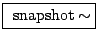

Example C06.signal.to.control.pd (not pictured) demonstrates conversion from audio signals back to numeric control streams, via a new tilde object introduced here.
:
convert audio signal to control messages. This always gives the most recently
computed audio sample (fast-as-possible conversion), so the exact sampling
time varies by up to one audio block.
It is frequently desirable to sense the audio signal's amplitude rather than peek at a single sample; Example C07.envelope.follower.pd (also not pictured) introduces another object which does this:
 :
RMS envelope follower. Outputs control messages giving the short-term RMS
amplitude (in decibels) of the incoming audio signal. A creation argument allows
you to select the number of samples used in the RMS computation; smaller numbers
give faster (and possibly less stable) output.
:
RMS envelope follower. Outputs control messages giving the short-term RMS
amplitude (in decibels) of the incoming audio signal. A creation argument allows
you to select the number of samples used in the RMS computation; smaller numbers
give faster (and possibly less stable) output.